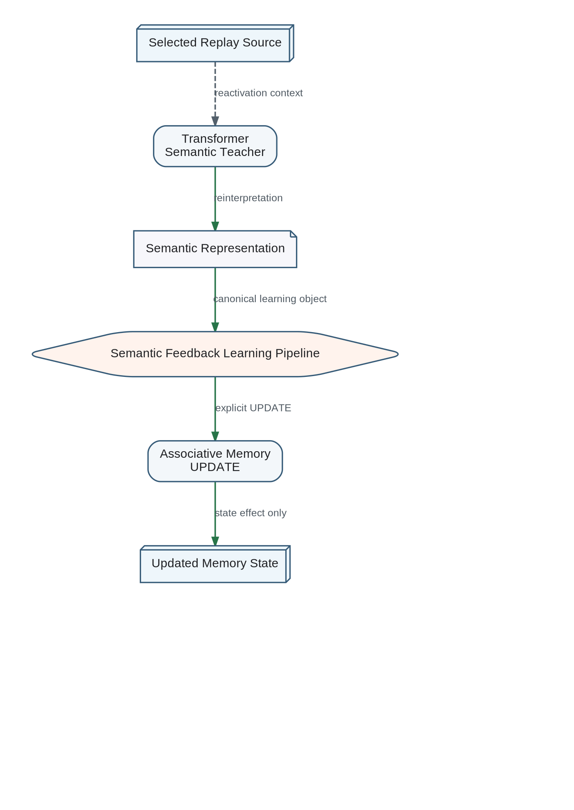

Replay follows Importance Estimation and the initial design of Offline Consolidation because it requires both a selection policy and a protected execution context.
- Priority replay for high-importance or unstable knowledge.
- Diversity replay to prevent narrow recent experience from dominating memory.
- Counterexample replay to test overgeneralized associations.
- Recovery replay after rollback or detected false consolidation.
- Cross-context replay to measure whether knowledge remains useful under changed goals or environments.
Canonical Replay Boundary
